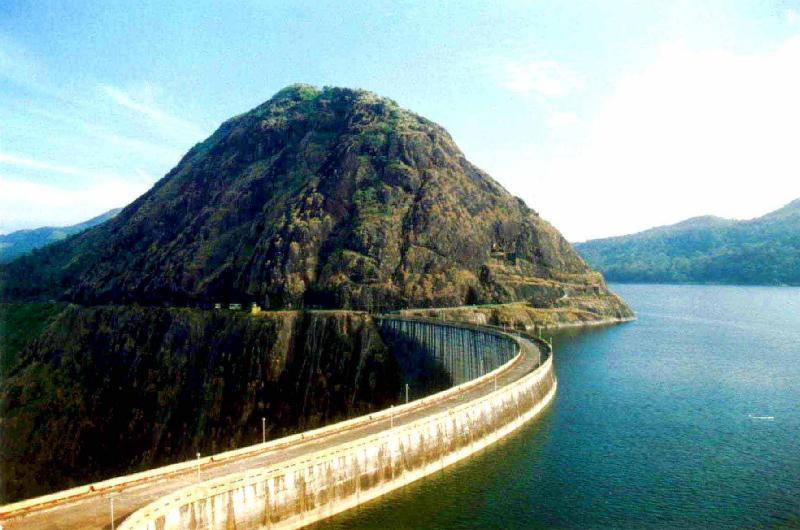

AYYAPPANCOIL HANGING BRIDGE
Ayyappancoil, also spelt Ayyappankovil is a village in newly formed Idukki taluk in Idukki district in the Indian state of Kerala. It is highly noted for the newly constructed suspension bridge and the old historic Sastha temple on the banks of Periyar river.

IDUKKI DAM
The Idukki Dam is a double curvature Arch dam constructed across the Periyar River in a narrow gorge between two granite hills locally known as Kuravan and Kurathi in Kerala, India
PERIYAR NATIONAL PARK
Periyar National Park, also known as Periyar Tiger Reserve, is in the mountainous Western Ghats of Kerala, southern India. This wildlife sanctuary is home to tigers and a significant elephant population, as well as rare lion-tailed macaques, sambar deer, leopards and Indian bison.